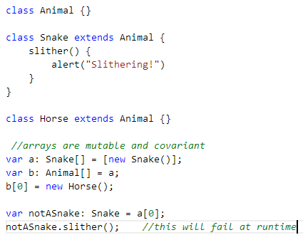
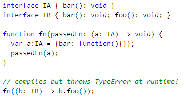

Sometimes TypesScript’s type system does not behave as one would expect it to… TypeScript’s type system is unsound A sound type system never permits an incorrectly typed system to pass type checking. Well, it happens in TypeScript.  